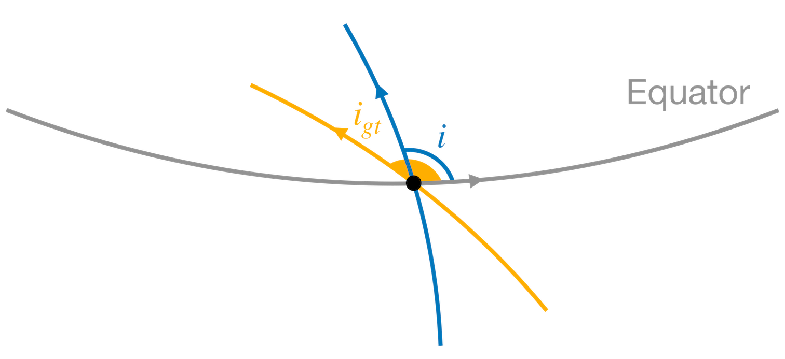
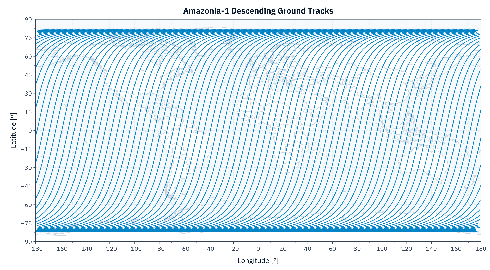
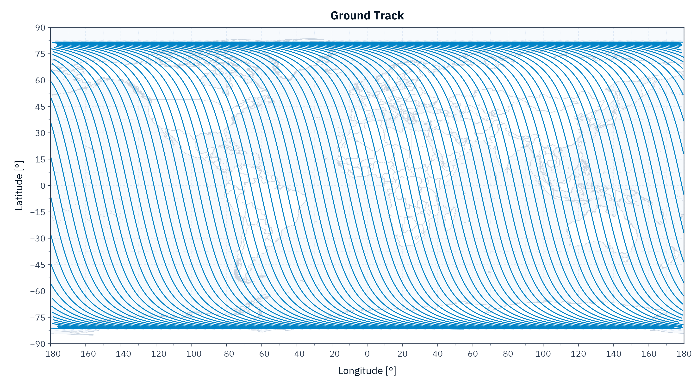

Ground Track
We can obtain the ground track of a satellite using the function ground_track:
SatelliteAnalysis.ground_track — Function
ground_track(orbp::OrbitPropagator; kwargs...) -> Vector{NTuple{2, T}}Compute the satellite ground track using the orbit propagator orbp. It returns a vector of NTuple{2, T} where T is the promoted floating-point type of the time inputs, the first element is the latitude [rad], and the second is the longitude [rad] of each point in the ground track.
Keywords
add_nans::Bool: Iftrue, we addNaNif there is a discontinuity in the ground track to improve plotting. (Default: true)duration::Number: Duration of the analysis [s]. (Default: 86400)initial_time::Number: Initial time regarding the orbit propagatororbpepoch [s]. (Default: 0)f_eci_to_ecef::Function: Function to convert the orbit propagator position represented in the Earth-centered inertial (ECI) reference frame to the Earth-centered, Earth-fixed (ECEF) reference frame. The signature must bef_eci_to_ecef(r_i::AbstractVector, jd::Number) -> AbstractVectorand it must return the position vector
r_irepresented in the ECEF at the instantjd[Julian Day]. By default, we use TEME as the ECI and PEF as the ECEF. (Default:_default_eci_to_ecef)step::Union{Nothing, Number}: Step for the computation. Ifnothing, we will roughly compute the step to approximate 1° in the mean anomaly. (Default:nothing)track_types::Symbol: A symbol describing what kind of track types we must add to the output vector. It can be:ascendingfor only ascending passages,:descendingfor only descending passages, or:allfor both. (Default::all)
Extended Help
Throws
ArgumentError: Ifstepis not positive, or iftrack_typesis not:all,:ascending, or:descending.
Examples
julia> using SatelliteAnalysis, UnicodePlots
julia> jd₀ = date_to_jd(2024, 1, 1);
julia> orb = KeplerianElements(
jd₀,
7130.982e3,
0.001111,
98.405 |> deg2rad,
ltdn_to_raan(10.5, jd₀),
π / 2,
0
);
julia> orbp = Propagators.init(Val(:J2), orb);
julia> gt = ground_track(orbp);
julia> lineplot(last.(gt), first.(gt))
┌────────────────────────────────────────┐
2 │⠀⠀⠀⠀⠀⠀⠀⠀⠀⠀⠀⠀⠀⠀⠀⠀⠀⠀⠀⠀⡇⠀⠀⠀⠀⠀⠀⠀⠀⠀⠀⠀⠀⠀⠀⠀⠀⠀⠀⠀│
│⠀⠀⠀⠀⠀⠀⠀⠀⠀⠀⠀⠀⠀⠀⠀⠀⠀⠀⠀⠀⡇⠀⠀⠀⠀⠀⠀⠀⠀⠀⠀⠀⠀⠀⠀⠀⠀⠀⠀⠀│
│⠀⠀⠀⠀⣸⡿⠿⣻⠿⣿⠿⣟⡯⢟⡿⢿⣿⡿⣿⡟⣿⡿⢿⣿⢿⣿⢻⣿⠿⣿⡟⣿⡿⣿⡿⢿⠀⠀⠀⠀│
│⠀⠀⠀⠀⠞⠹⡼⠙⣶⠋⢶⠋⢣⠏⢳⡞⠀⣿⡁⡽⡇⣹⡇⢨⢏⢈⢯⠀⣿⡀⡽⡁⣹⡇⢸⣯⠀⠀⠀⠀│
│⠀⠀⠀⠀⢦⢰⢳⢠⢿⡀⡟⡄⡞⡇⡸⣇⢸⠁⢷⠃⣷⡇⢸⡏⠸⡼⠈⣾⠀⣷⠃⢣⠇⢹⣏⠏⠀⠀⠀⠀│
│⠀⠀⠀⠀⢸⡞⠘⣾⠀⣿⠁⢧⠃⢹⡇⢸⡏⠀⣼⠀⣿⡆⢰⡇⢀⣇⠀⣷⠀⣾⠀⣸⡀⢸⣿⠀⠀⠀⠀⠀│
│⠀⠀⠀⠀⢀⡇⠀⣇⠀⣿⠀⢸⠀⢸⡁⢨⡇⠀⡇⡇⡏⡇⣸⢳⢸⢸⢰⢻⣀⡏⡆⡇⡇⡜⣯⠀⠀⠀⠀⠀│
│⠤⠤⠤⠤⢼⢧⢤⢿⠤⣿⠤⡿⡦⡼⡧⢼⣧⢴⠥⢧⡧⢼⡧⢼⡾⠼⣼⠤⣿⠤⣧⠧⢷⣧⢿⠤⠤⠤⠤⠤│
│⠀⠀⠀⠀⡼⢸⢸⠸⣼⠁⣇⠇⡇⡇⢳⡞⢸⢸⠀⢸⡇⢸⡇⠈⡇⠀⡏⠀⣿⠀⢸⠀⢸⢹⠘⡆⠀⠀⠀⠀│
│⠀⠀⠀⠀⠁⠈⡏⠀⡿⠀⢿⠀⢹⠃⢸⡇⠘⡇⠀⡜⡇⣸⡇⢸⢧⢠⢿⠀⣿⠀⡾⡄⡸⡟⠀⣷⠀⠀⠀⠀│
│⠀⠀⠀⠀⢆⢰⢳⢀⢿⠀⡿⡄⡼⡆⣸⣇⢰⢧⢠⠇⣧⡇⢹⡞⠸⡼⠘⣾⠁⣷⠃⢧⢧⢷⢀⡟⠀⠀⠀⠀│
│⠀⠀⠀⠀⢘⣎⢈⣞⠀⣿⡁⣳⡃⣹⡇⢸⣏⢘⣞⢀⡿⢆⡼⢧⣰⢳⣠⠿⣀⠾⣄⡞⣆⢈⣿⠀⠀⠀⠀⠀│
│⠀⠀⠀⠀⢹⣾⣿⣾⣿⣶⣿⣧⣿⣷⣿⣷⣾⣿⣼⣿⣷⣾⣷⣾⣵⣲⣽⣶⣿⣶⣯⣶⣼⣿⣾⣿⠀⠀⠀⠀│
│⠀⠀⠀⠀⠀⠀⠀⠀⠀⠀⠀⠀⠀⠀⠀⠀⠀⠀⠀⠀⡇⠀⠀⠀⠀⠀⠀⠀⠀⠀⠀⠀⠀⠀⠀⠀⠀⠀⠀⠀│
-2 │⠀⠀⠀⠀⠀⠀⠀⠀⠀⠀⠀⠀⠀⠀⠀⠀⠀⠀⠀⠀⡇⠀⠀⠀⠀⠀⠀⠀⠀⠀⠀⠀⠀⠀⠀⠀⠀⠀⠀⠀│
└────────────────────────────────────────┘
⠀-4⠀⠀⠀⠀⠀⠀⠀⠀⠀⠀⠀⠀⠀⠀⠀⠀⠀⠀⠀⠀⠀⠀⠀⠀⠀⠀⠀⠀⠀⠀⠀⠀⠀⠀⠀⠀⠀4⠀
julia> gt = ground_track(orbp, track_types = :ascending);
julia> lineplot(last.(gt), first.(gt))
┌────────────────────────────────────────┐
2 │⠀⠀⠀⠀⠀⠀⠀⠀⠀⠀⠀⠀⠀⠀⠀⠀⠀⠀⠀⠀⡇⠀⠀⠀⠀⠀⠀⠀⠀⠀⠀⠀⠀⠀⠀⠀⠀⠀⠀⠀│
│⠀⠀⠀⠀⠀⠀⠀⠀⠀⠀⠀⠀⠀⠀⠀⠀⠀⠀⠀⠀⡇⠀⠀⠀⠀⠀⠀⠀⠀⠀⠀⠀⠀⠀⠀⠀⠀⠀⠀⠀│
│⠀⠀⠀⠀⢸⡛⠽⡛⠿⣟⠫⣟⠫⢍⠛⠻⢿⡻⢽⡛⡿⡛⠿⣟⠯⣟⠫⢟⠻⢿⡛⢽⡛⠽⡛⠯⠀⠀⠀⠀│
│⠀⠀⠀⠀⠀⠹⡄⠘⡆⠈⢆⠈⢣⠀⢳⡀⠀⢳⡀⠹⡇⠙⡆⠈⢆⠈⢧⠀⢳⡀⠱⡀⠙⡄⠘⣆⠀⠀⠀⠀│
│⠀⠀⠀⠀⢦⠀⢱⠀⢸⡀⠘⡄⠈⡇⠀⣇⠀⠀⢧⠀⣷⠀⢸⠀⠸⡄⠈⡆⠀⣇⠀⢣⠀⢹⠀⠈⠀⠀⠀⠀│
│⠀⠀⠀⠀⢸⡀⠘⡆⠀⡇⠀⢇⠀⢹⠀⢸⠀⠀⢸⠀⡟⡆⠀⡇⠀⣇⠀⢳⠀⢸⠀⠸⡀⠈⡇⠀⠀⠀⠀⠀│
│⠀⠀⠀⠀⠀⡇⠀⣇⠀⢳⠀⢸⠀⠸⡀⠈⡇⠀⠀⡇⡇⡇⠀⢳⠀⢸⠀⢸⡀⠈⡆⠀⡇⠀⢧⠀⠀⠀⠀⠀│
│⠤⠤⠤⠤⠤⢧⠤⢼⠤⢼⠤⠼⡦⠤⡧⠤⣧⠤⠤⢧⡧⢼⠤⢼⠤⠼⡤⠤⡧⠤⡧⠤⢷⠤⢼⠤⠤⠤⠤⠤│
│⠀⠀⠀⠀⠀⢸⠀⠸⡄⠀⡇⠀⡇⠀⢳⠀⢸⠀⠀⢸⡇⠸⡄⠈⡇⠀⡇⠀⢧⠀⢸⠀⢸⠀⠘⡆⠀⠀⠀⠀│
│⠀⠀⠀⠀⠀⠈⡇⠀⡇⠀⢧⠀⢹⠀⢸⡀⠘⡆⠀⠘⡇⠀⡇⠀⢧⠀⢹⠀⢸⠀⠸⡄⠈⡇⠀⣇⠀⠀⠀⠀│
│⠀⠀⠀⠀⢆⠀⢳⠀⢸⠀⠸⡄⠘⡆⠀⣇⠀⢧⠀⠀⣧⠀⢹⠀⠸⡀⠘⡆⠀⣇⠀⢧⠀⢳⠀⠘⠀⠀⠀⠀│
│⠀⠀⠀⠀⠘⣆⠈⢆⠀⢧⡀⢳⡀⠹⡄⠘⣄⠘⣆⠀⡏⢆⠀⢧⠀⢳⡀⠹⡀⠸⣄⠘⣆⠈⢧⠀⠀⠀⠀⠀│
│⠀⠀⠀⠀⠐⣬⣗⣮⣷⣦⣵⣢⣽⣲⣽⣶⣬⣗⣬⣗⣧⣬⣓⣦⣵⣢⣽⣲⣽⣶⣬⣖⣬⣗⣮⡵⠀⠀⠀⠀│
│⠀⠀⠀⠀⠀⠀⠀⠀⠀⠀⠀⠀⠀⠀⠀⠀⠀⠀⠀⠀⡇⠀⠀⠀⠀⠀⠀⠀⠀⠀⠀⠀⠀⠀⠀⠀⠀⠀⠀⠀│
-2 │⠀⠀⠀⠀⠀⠀⠀⠀⠀⠀⠀⠀⠀⠀⠀⠀⠀⠀⠀⠀⡇⠀⠀⠀⠀⠀⠀⠀⠀⠀⠀⠀⠀⠀⠀⠀⠀⠀⠀⠀│
└────────────────────────────────────────┘
⠀-4⠀⠀⠀⠀⠀⠀⠀⠀⠀⠀⠀⠀⠀⠀⠀⠀⠀⠀⠀⠀⠀⠀⠀⠀⠀⠀⠀⠀⠀⠀⠀⠀⠀⠀⠀⠀⠀4⠀
julia> gt = ground_track(orbp, track_types = :descending);
julia> lineplot(last.(gt), first.(gt))
┌────────────────────────────────────────┐
2 │⠀⠀⠀⠀⠀⠀⠀⠀⠀⠀⠀⠀⠀⠀⠀⠀⠀⠀⠀⠀⡇⠀⠀⠀⠀⠀⠀⠀⠀⠀⠀⠀⠀⠀⠀⠀⠀⠀⠀⠀│
│⠀⠀⠀⠀⠀⠀⠀⠀⠀⠀⠀⠀⠀⠀⠀⠀⠀⠀⠀⠀⡇⠀⠀⠀⠀⠀⠀⠀⠀⠀⠀⠀⠀⠀⠀⠀⠀⠀⠀⠀│
│⠀⠀⠀⠀⣸⡽⠟⣻⠽⣻⠿⢛⡯⢛⡯⢟⡻⠝⣻⠝⣿⠽⢛⠯⢛⡯⢛⡿⠟⡻⠝⣻⠽⣻⠿⢓⠀⠀⠀⠀│
│⠀⠀⠀⠀⠞⠀⡼⠁⣰⠃⢰⠋⢠⠏⢀⡞⠀⡜⠁⡼⡇⣰⠃⢠⠏⢀⠎⠀⡞⠀⡼⠁⣰⠃⢰⣫⠀⠀⠀⠀│
│⠀⠀⠀⠀⠀⢰⠃⢠⠇⠀⡏⠀⡞⠀⡸⠀⢸⠁⢰⠃⣇⡇⠀⡏⠀⡼⠀⣸⠀⢰⠃⢠⠇⠀⣏⠇⠀⠀⠀⠀│
│⠀⠀⠀⠀⠀⡞⠀⣸⠀⢸⠁⢠⠃⠀⡇⠀⡏⠀⡼⠀⣿⠀⢰⠁⢀⡇⠀⡇⠀⡞⠀⣸⠀⢸⢸⠀⠀⠀⠀⠀│
│⠀⠀⠀⠀⢀⡇⠀⡇⠀⡜⠀⢸⠀⢸⠁⢠⠇⠀⡇⠀⡏⠀⣸⠀⢸⠀⢰⠃⢀⡇⠀⡇⠀⡜⡏⠀⠀⠀⠀⠀│
│⠤⠤⠤⠤⢼⠤⢤⠧⠤⡧⠤⡯⠤⡼⠤⢼⠤⢴⠥⢤⡧⠤⡧⠤⡾⠤⢼⠤⢼⠤⢤⠧⠤⣧⠧⠤⠤⠤⠤⠤│
│⠀⠀⠀⠀⡼⠀⢸⠀⢸⠁⢀⠇⠀⡇⠀⡞⠀⢸⠀⢸⡇⢠⠃⠀⡇⠀⡏⠀⡼⠀⢸⠀⢸⢹⠀⠀⠀⠀⠀⠀│
│⠀⠀⠀⠀⠁⠀⡎⠀⡸⠀⢸⠀⢰⠃⢀⡇⠀⡇⠀⡜⡇⣸⠀⢸⠁⢠⠇⠀⡇⠀⡎⠀⡸⡞⠀⣰⠀⠀⠀⠀│
│⠀⠀⠀⠀⠀⢰⠃⢀⠇⠀⡏⠀⡼⠀⣸⠀⢰⠁⢠⠇⣇⡇⠀⡞⠀⡼⠀⢸⠁⢰⠃⢀⢧⠇⢀⡇⠀⠀⠀⠀│
│⠀⠀⠀⠀⢀⠎⢀⡞⠀⡼⠁⡰⠃⣠⠃⢠⠏⢀⡞⢀⡿⠀⡼⠁⣰⠃⢠⠇⢀⠎⢀⡞⠀⢀⡜⠀⠀⠀⠀⠀│
│⠀⠀⠀⠀⢩⣖⣯⣔⣮⣴⣾⣥⣺⣥⣲⣥⣖⣯⣔⣯⣷⣾⣵⣺⣥⣲⣥⣶⣯⣖⣋⣤⣔⣯⣔⣎⠀⠀⠀⠀│
│⠀⠀⠀⠀⠀⠀⠀⠀⠀⠀⠀⠀⠀⠀⠀⠀⠀⠀⠀⠀⡇⠀⠀⠀⠀⠀⠀⠀⠀⠀⠀⠀⠀⠀⠀⠀⠀⠀⠀⠀│
-2 │⠀⠀⠀⠀⠀⠀⠀⠀⠀⠀⠀⠀⠀⠀⠀⠀⠀⠀⠀⠀⡇⠀⠀⠀⠀⠀⠀⠀⠀⠀⠀⠀⠀⠀⠀⠀⠀⠀⠀⠀│
└────────────────────────────────────────┘
⠀-4⠀⠀⠀⠀⠀⠀⠀⠀⠀⠀⠀⠀⠀⠀⠀⠀⠀⠀⠀⠀⠀⠀⠀⠀⠀⠀⠀⠀⠀⠀⠀⠀⠀⠀⠀⠀⠀4⠀Ground Track Inclination
Many analyses require the ground track inclination. For example, if we are designing a remote sensing mission with an optical payload, we must know how much two images overlap. This information can only be computed using spherical trigonometry and the ground track inclination instead of the orbital one.
The ground track inclination $i_{gt}$, shown in the following figure, is a composition of the orbit inclination, the Earth's angular speed, and the RAAN time derivative. We can compute it using:
\[i_{gt} = \tan^{-1}\left(\frac{ \omega_s \sin i }{ \omega_s \cos i - \omega_e + \dot{\Omega} }\right)\ ,\]
where $i$ is the orbital inclination, $\omega_s$ is the satellite angular speed at Equator, $\omega_e$ is the Earth angular speed, and $\Omega$ is the RAAN.

Formally, we should use the satellite instantaneous angular speed at the Equator in $\omega_s$. However, given the perturbations caused by the Earth's gravitational potential, this speed is not simple to compute. The calculation would require implementing an orbit propagator. Thus, we simplify it by assuming that the orbit eccentricity is small. This assumption is reasonable given the missions that would benefit from the computation of the ground track inclination. In this case, we approximate $\omega_s$ as the mean satellite angular speed.
We can compute it using the function ground_track_inclination:
SatelliteAnalysis.ground_track_inclination — Function
ground_track_inclination(a::Number, e::Number, i::Number; kwargs...) -> T
ground_track_inclination(orb::Orbit{Tepoch, T}; kwargs...) where {Tepoch <: Number, T <: Number} -> TCompute the ground track inclination at the Equator [rad] in an orbit with semi-major axis a [m], eccentricity e [ ], and inclination i [rad]. The orbit can also be specified by orb (see Orbit).
Keywords
perturbation::Symbol: Symbol to select the perturbation terms that will be used. It can be:J0,:J2, or:J4. (Default::J2)m0::Number: Standard gravitational parameter for Earth [m³ / s²]. (Default:GM_EARTH)J2::Number: J₂ perturbation term. (Default:EGM_2008_J2)J4::Number: J₄ perturbation term. (Default:EGM_2008_J4)R0::Number: Earth's equatorial radius [m]. (Default:EARTH_EQUATORIAL_RADIUS)we::Number: Earth's angular speed [rad / s]. (Default:EARTH_ANGULAR_SPEED)
Extended Help
We define the ground track inclination as the angle that the ground track has with respect to the Equator. This information is important to compute, for example, the required swath for a remote sensing satellite to cover the entire Earth.
The ground track inclination i_gt is given by:
┌ ┐
│ ω_s ⋅ sin i │
i_gt = atan │ ───────────────────── │
│ ω_s ⋅ cos i - ω_e + Ω̇ │
└ ┘where ω_s = n + ω̇ is the satellite angular velocity, n is the perturbed mean motion, i is the orbit inclination, ω is the orbit argument of perigee, Ω is the orbit right ascension of the ascending node, and ω_e is the Earth's angular rate.
Formally, we should use the satellite instantaneous angular speed at the Equator instead of the mean angular speed ω_s. However, given the perturbations caused by the Earth's gravitational potential, the former is not simple to compute. This calculation would required to implement an orbit propagator here. Thus, we simplify it by assuming that the orbit eccentricity is small. This assumption is reasonable given the missions that would benefit from the computation of the ground track inclination. In this case, the orbit angular speed is almost constant and equal to ω_s.
Examples
julia> using SatelliteAnalysis
julia> ground_track_inclination(7130.982e3, 0.00111, 98.410 |> deg2rad) |> rad2deg
102.30052101661899
julia> jd₀ = date_to_jd(2021, 1, 1)
2.4592155e6
julia> orb = KeplerianElements(
jd₀,
7130.982e3,
0.001111,
98.410 |> deg2rad,
ltdn_to_raan(10.5, jd₀),
π / 2,
0
)
KeplerianElements{TrueAnomaly, Float64, Float64}:
Epoch : 2.45922e6 (2021-01-01T00:00:00)
Semi-Major Axis : 7130.982 km
Eccentricity : 0.001111
Inclination : 98.41°
RA of Asc. Node : 78.40205742°
Arg. of Periapsis : 90.0°
True Anomaly : 0.0°
julia> ground_track_inclination(orb) |> rad2deg
102.30052101658998Examples
We will compute the descending ground tracks of the Amazonia-1 mission for five days. The first thing we need to do is define the orbit:
julia> jd₀ = date_to_jd(2021, 1, 1)2.4592155e6julia> orb = KeplerianElements( jd₀, 7130.982e3, 0.001111, 98.405 |> deg2rad, ltdn_to_raan(10.5, jd₀), π / 2, 0 )KeplerianElements{TrueAnomaly, Float64, Float64}: Epoch : 2.45922e6 (2021-01-01T00:00:00) Semi-Major Axis : 7130.982 km Eccentricity : 0.001111 Inclination : 98.405° RA of Asc. Node : 78.40205742° Arg. of Periapsis : 90.0° True Anomaly : 0.0°
The next step is to define the desired propagator:
julia> orbp = Propagators.init(Val(:J2), orb)OrbitPropagatorJ2{Float64, Float64} (J2 Orbit Propagator): ├─ Mean Elements │ Epoch : 2.45922e6 (2021-01-01T00:00:00) │ Semi-Major Axis : 7130.982 km │ Eccentricity : 0.001111 │ Inclination : 98.405° │ RA of Asc. Node : 78.40205742° │ Arg. of Periapsis : 90.0° │ Mean Anomaly : 0.0° ├─ Secular Rates │ Mean Motion : 14.40836316 rev/day │ RAAN Rate : 0.9849934616 °/day │ Arg. of Periapsis Rate : -3.009417209 °/day ├─ Constants │ R₀ : 6378.137 km │ μm : 0.001239447462 rad/s │ J₂ : 0.001082626174 └─ Propagation Last Instant : 0.0 s
Now, we can use the function ground_track to obtain the satellite ground track considering only the descending passages:
julia> gt = ground_track(orbp; duration = 5 * 86400, track_types = :descending)13069-element Vector{Tuple{Float64, Float64}}: (1.4249660489243559, -1.96291423422943) (1.4239401788553792, -2.083242314527422) (1.4209046654702746, -2.2003522483295) (1.4159776024222026, -2.3115222626371565) (1.4093319467128498, -2.4148462532664547) (1.4011694235937049, -2.509306269805821) (1.3916971289502398, -2.5946490797008246) (1.3811109722798571, -2.6711712548167506) (1.369586456576299, -2.7395018851996813) (1.3572752194744642, -2.8004294786861044) ⋮ (-1.3696124211293979, 2.1732322226073304) (-1.3810862714527488, 2.1051956587020113) (-1.3916303406608752, 2.029040761805442) (-1.4010715304835595, 1.9441454031386163) (-1.4092166384826468, 1.8502127873070415) (-1.4158613146520098, 1.7474838581667644) (-1.4208061594271748, 1.6369482222353915) (-1.42387952489488, 1.5204676340474157) (-1.4249630713741042, 1.4007103146720492)
Finally, we can extract the latitude and longitude of each point in the ground track using:
julia> gt_lat = first.(gt)13069-element Vector{Float64}: 1.4249660489243559 1.4239401788553792 1.4209046654702746 1.4159776024222026 1.4093319467128498 1.4011694235937049 1.3916971289502398 1.3811109722798571 1.369586456576299 1.3572752194744642 ⋮ -1.3696124211293979 -1.3810862714527488 -1.3916303406608752 -1.4010715304835595 -1.4092166384826468 -1.4158613146520098 -1.4208061594271748 -1.42387952489488 -1.4249630713741042julia> gt_lon = last.(gt)13069-element Vector{Float64}: -1.96291423422943 -2.083242314527422 -2.2003522483295 -2.3115222626371565 -2.4148462532664547 -2.509306269805821 -2.5946490797008246 -2.6711712548167506 -2.7395018851996813 -2.8004294786861044 ⋮ 2.1732322226073304 2.1051956587020113 2.029040761805442 1.9441454031386163 1.8502127873070415 1.7474838581667644 1.6369482222353915 1.5204676340474157 1.4007103146720492
If we use Makie.jl to plot, we obtain:

Finally, the ground track inclination is:
julia> ground_track_inclination(orb) |> rad2deg102.29560077110351
Plotting
If the user loads the package GeoJSON.jl together with a Makie.jl backend, an extension is loaded and adds the possibility to plot the ground track. In this case, the following functions are available:
SatelliteAnalysis.plot_ground_track — Function
plot_ground_track(gt::Vector{NTuple{2, T}}; kwargs...) where {T <: Number} -> Figure, AxisPlot the ground track gt computed using the function ground_track. It returns the objects Figure and Axis used to plot the data. For more information, please refer to Makie.jl documentation.
This function plots the countries' borders in the created figure using the file with the country polygons fetched with the function fetch_country_polygons. Hence, if this file does not exist, the algorithm tries to download it.
This function only works after loading the package GeoJSON.jl and one Makie.jl backend (CairoMakie.jl or GLMakie.jl, for example).
Keywords
theme::Union{Nothing, Symbol, Makie.Theme}: Theme used to style the figure, which is applied locally. If it is aSymbol, it selects the variant of the theme created by the functionSatelliteAnalysis.makie_theme, which can be:lightor:dark. If it is aMakie.Theme, this theme is applied. If it isnothing, no theme is applied, and the figure uses the current Makie theme. In the last two cases, the elements that are not styled by the theme use the colors of the variant:light. (Default::light)
All other kwargs... are passed to the function plot_world_map.
Extended help
Throws
ArgumentError: If the theme variant inthemeis not:darkor:light.
Examples
julia> using SatelliteAnalysis, GeoJSON, GLMakie
julia> jd₀ = date_to_jd(2021, 1, 1)
2.4592155e6
julia> orb = KeplerianElements(
jd₀,
7130.982e3,
0.001111,
98.405 |> deg2rad,
ltdn_to_raan(10.5, jd₀),
π / 2,
0
)
KeplerianElements{TrueAnomaly, Float64, Float64}:
Epoch : 2.45922e6 (2021-01-01T00:00:00)
Semi-Major Axis : 7130.982 km
Eccentricity : 0.001111
Inclination : 98.405°
RA of Asc. Node : 78.40205742°
Arg. of Periapsis : 90.0°
True Anomaly : 0.0°
julia> orbp = Propagators.init(Val(:J2), orb)
OrbitPropagatorJ2{Float64, Float64}:
Propagator name : J2 Orbit Propagator
Propagator epoch : 2021-01-01T00:00:00
Last propagation : 2021-01-01T00:00:00
julia> gt = ground_track(orbp; track_types = :descending, duration = 5 * 86400);
julia> fig, ax = plot_ground_track(gt; size = (2000, 1000))
(Scene (2000px, 1000px):
0 Plots
1 Child Scene:
└ Scene (2000px, 1000px), Axis (2 plots))
julia> figSatelliteAnalysis.plot_ground_track! — Function
plot_ground_track!(ax::Axis, gt::Vector{NTuple{2, T}}; kwargs...) where {T <: Number} -> LinesPlot in the Makie.jl axis ax the ground track gt computed using the function ground_track, returning the created plot, which can be used, for example, to build a legend. All the keywords kwargs... are passed to the function lines!, allowing the selection of attributes such as color, label, linestyle, and linewidth.
Since this function draws into an existing axis, it does not apply the theme provided by the function SatelliteAnalysis.makie_theme. The plot inherits the styling of the figure that owns ax.
This function only works after loading the package GeoJSON.jl and one Makie.jl backend (CairoMakie.jl or GLMakie.jl, for example).
Extended Help
Examples
julia> using SatelliteAnalysis, GeoJSON, GLMakie
julia> jd₀ = date_to_jd(2021, 1, 1)
2.4592155e6
julia> orb = KeplerianElements(
jd₀,
7130.982e3,
0.001111,
98.405 |> deg2rad,
ltdn_to_raan(10.5, jd₀),
π / 2,
0
)
KeplerianElements{TrueAnomaly, Float64, Float64}:
Epoch : 2.45922e6 (2021-01-01T00:00:00)
Semi-Major Axis : 7130.982 km
Eccentricity : 0.001111
Inclination : 98.405°
RA of Asc. Node : 78.40205742°
Arg. of Periapsis : 90.0°
True Anomaly : 0.0°
julia> orbp = Propagators.init(Val(:J2), orb)
OrbitPropagatorJ2{Float64, Float64}:
Propagator name : J2 Orbit Propagator
Propagator epoch : 2021-01-01T00:00:00
Last propagation : 2021-01-01T00:00:00
julia> gt = ground_track(orbp; track_types = :descending, duration = 5 * 86400);
julia> fig = Figure(size = (1000, 1000))
julia> ax = Axis(fig[1, 1])
julia> plot_ground_track!(ax, gt)Example
The code:
julia> using GeoJSON, CairoMakiejulia> jd₀ = date_to_jd(2021, 1, 1)2.4592155e6julia> orb = KeplerianElements( jd₀, 7130.982e3, 0.001111, 98.405 |> deg2rad, ltdn_to_raan(10.5, jd₀), π / 2, 0 )KeplerianElements{TrueAnomaly, Float64, Float64}: Epoch : 2.45922e6 (2021-01-01T00:00:00) Semi-Major Axis : 7130.982 km Eccentricity : 0.001111 Inclination : 98.405° RA of Asc. Node : 78.40205742° Arg. of Periapsis : 90.0° True Anomaly : 0.0°julia> orbp = Propagators.init(Val(:J2), orb)OrbitPropagatorJ2{Float64, Float64} (J2 Orbit Propagator): ├─ Mean Elements │ Epoch : 2.45922e6 (2021-01-01T00:00:00) │ Semi-Major Axis : 7130.982 km │ Eccentricity : 0.001111 │ Inclination : 98.405° │ RA of Asc. Node : 78.40205742° │ Arg. of Periapsis : 90.0° │ Mean Anomaly : 0.0° ├─ Secular Rates │ Mean Motion : 14.40836316 rev/day │ RAAN Rate : 0.9849934616 °/day │ Arg. of Periapsis Rate : -3.009417209 °/day ├─ Constants │ R₀ : 6378.137 km │ μm : 0.001239447462 rad/s │ J₂ : 0.001082626174 └─ Propagation Last Instant : 0.0 sjulia> gt = ground_track(orbp; duration = 5 * 86400, track_types = :ascending)13069-element Vector{Tuple{Float64, Float64}}: (-1.424964140724619, 0.9605396089520332) (-1.423947779818173, 0.8407347528233485) (-1.4209390983857484, 0.7241056888391549) (-1.4160541797815134, 0.6133430888155194) (-1.4094632285803894, 0.5103377847257988) (-1.4013650457040523, 0.416107332503912) (-1.3919640562160773, 0.33091467581565837) (-1.381453967202554, 0.2544776504600749) (-1.370008591120168, 0.1861822261209803) (-1.357778332353635, 0.1252533588677489) ⋮ (1.3699837816216598, -1.188487585068758) (1.38147960695905, -1.2570788572953415) (1.3920315039315792, -1.3338851836503085) (1.4014632451988793, -1.4195273964288586) (1.4095784122358466, -1.5142871300265797) (1.4161698413470452, -1.6178887073593322) (1.4210364303809528, -1.729285725063835) (1.4240067086730515, -1.846542611589315) (1.4249648934462305, -1.9669150896210252)julia> fig, ax = plot_ground_track(gt)(Scene(1 children, 0 plots), Makie.Axis (2 plots))julia> save("ground_track.png", fig)
produces the following figure:
